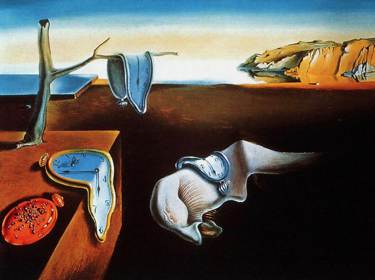
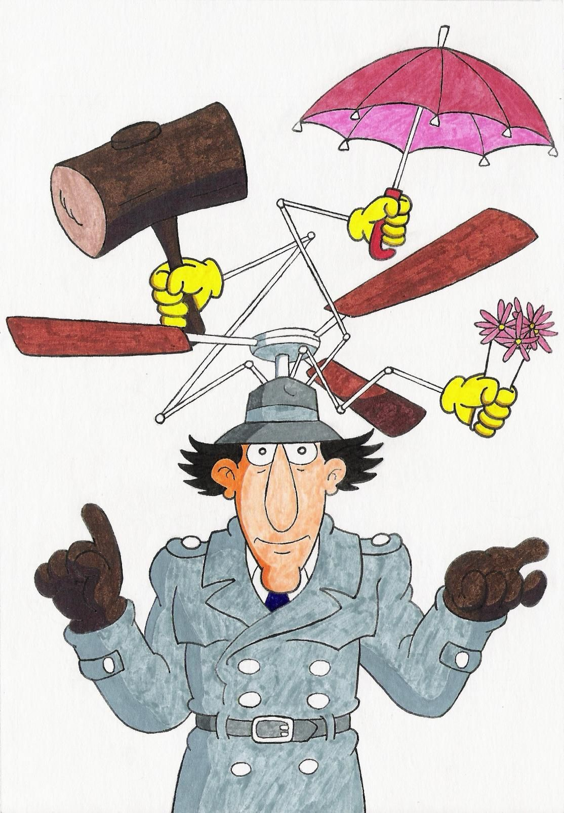
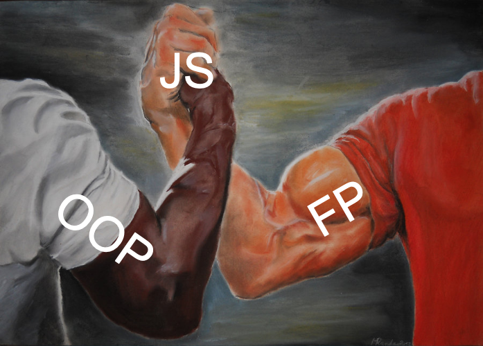
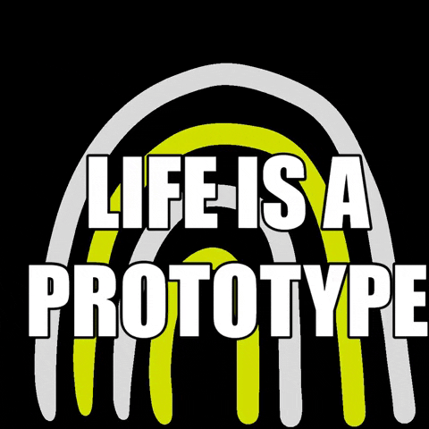
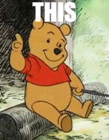
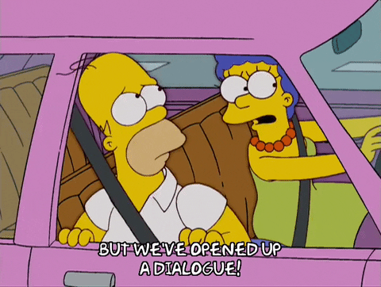

# Part 1 ## Advanced JS -- ### Goals - Learn more JS features & internals - Explore Functional and Object-Oriented JS - Have some fun with JS in the browser -- ### Ready? # Let's go!
## Review: JS & the DOM -- Getting HTML elements from JS ```js document document.getElementById('my-id') document.querySelectorAll('#my-id') document.documentElement ``` -- Attributes ```js element.getAttribute("name") element.setAttribute("name", "toggle") ``` -- Attribute presence vs. value ```js btn.getAttribute("disabled") // "" btn.setAttribute("disabled", "false") btn.hasAttribute("disabled") // true btn.deleteAttribute("disabled") ``` -- Event Handlers ```js element.addEventListener('click', (e) => { console.log('you clicked on:', e.target) })` ``` --
## Quick Win ### Dark Mode -- ### `dark-mode/index.html` 1. Grab the `html` element 1. Read the `data-theme` attribute 1. Add an event handler to the `#toggle` checkbox 1. Change `data-theme` to `'light'` or `'dark'` --
## Time (and other problems) <figure>  <figcaption> 'The Persistence of Memory' by Salvador Dali </figcaption> </figure> -- ## Review: Async JS `async` and `await` ```js async function fetchData() { const response = await fetch("some.api/resource"); return await response.json(); } ``` -- ### JS, why are you like this?  --  -- - Some actions take time to complete - The browser needs to stay responsive - But JS is <span class="accent">single-threaded</span> (does 1 thing at a time) Let's dig a little deeper to understand how it works! -- -- <div class="columns"> <div> <h3>JS runtime</h3> e.g. V8, SpiderMonkey </div> <div> <h3>Browser</h3> e.g. Chrome, Firefox </div> </div> -- <span></span> | <span></span> -- | -- <span class="accent">Call Stack</span> | Functions stack up when called, run to completion, pop off when done <span class="accent">Heap</span> | Data is stored in a big ol' pile of memory <span class="accent">Queue</span> | Messages get in line to send function calls to the stack <span class="accent">Event Loop</span> | Infinite `while` pops 1st message from queue & sends call to stack (if empty) <span></span> | <span></span> -- <!-- Browser/JS internals diagram-->  --  -- <figure> <iframe width="560" height="315" src="https://www.youtube.com/embed/8aGhZQkoFbQ?si=V0wopWrBzo5sU0ZL&start=746" title="YouTube video player" frameborder="0" allow="accelerometer; autoplay; clipboard-write; encrypted-media; gyroscope; picture-in-picture; web-share" allowfullscreen></iframe> <figcaption>'What the heck is the event loop anyway?' by Phillip Roberts</figcaption> </figure> -- ## Browser APIs  -- ### Window where JS is running ```js console.log(window); // Window { document: document, location: Location{...}, ... } window.location.toString(); // https://developer.mozilla.org/en-US/docs/Web/API/Window document === window.document // true console === window.console // true ``` -- ### User's Browser ```js console.log(navigator); // Navigator { // permissions: Permissions, // mediaCapabilities: MediaCapabilities, // oscpu: "Intel Mac OS X 10.15", // ... // } console.log(navigator.userAgent); // "Mozilla/5.0 (Macintosh; Intel Mac OS X 10.15) // Gecko/20100101 Firefox/119.0" ``` -- ### Dates & times ```js const today = new Date(); console.log(today.toDateString()); // "Tue Nov 28 2023" console.log(today.toLocaleDateString()); // 11/28/2023 console.log(Date.now()) // 1701155454525 ``` -- ### One trillion  ### milliseconds -- ### Timing things ```js const start = Date.now(); longRunningOperation(); const end = Date.now(); const elapsed = end - start; console.log(`that took ${elapsed/1000}s`); ``` -- ### `console.time` ```js console.time('stopwatch'); runAround(); console.timeLog('stopwatch'); // stopwatch: 17293ms console.time('lap'); runAround(); console.timeEnd('lap'); // lap: 3850ms - timer ended runAround(); console.timeEnd('stopwatch'); stopwatch: 24711ms - timer ended ``` -- ### Timeouts ```js console.log('prints immediately'); setTimeout(() => console.log('prints >1 second later'), 1000); console.log('prints immediately?'); ``` --  -- ### Canceling timers ```js const countdown = setTimeout(() => { console.log('liftoff') }, 10000); console.log(countdown); // 123 (timeout id) abortButton.addEventListener('click', () => { clearTimeout(countdown) }); ``` -- ### Intervals ```js const traveling = setInterval(() => { console.log('Are we there yet?'); }, 1000); // arrive clearInterval(traveling) ``` -- ### JS jargon The <span class="accent">Event Loop</span> is how JS avoids <span class="accent">blocking</span> the browser's execution --  <!-- -- ### Speaking of callbacks... ```js document.addEventListener("keydown", () => { console.log("hotline ready"); setTimeout(() => { console.log("bling"); }, 1000); }); ``` -->
## Quick Win ### Random Clock  -- ### `clock/index.html` 1. Get the `p` element with id `'time'` 1. Get the current time as a localized time string 1. Set the text of the `#time` element to the time string 1. Style the `p` with random values for `top`, `left`, and `color` 1. Repeat every 3 seconds -- 
## Functions -- ### Back to callbacks... `addEventListener(eventName, handlerFn)` `setTimeout(callbackFn, delay)` `setInterval(callbackFn, interval)` It's actually cool that JS can do this! -- ### Programming jargon JS has <span class="accent">first-class functions</span> (functions can be passed around to functions like any other data) Functions that operate on other functions are <span class="accent">higher-order functions</span> -- ### Functions as return values ```js function makeLogger(loglevel) { return function log(msg) { console[loglevel](msg); } } let level = 'warn'; const worryUser = makeLogger(level); worryUser('ohno'); // Warning: ohno ``` -- ### But what if we... ```js level = 'error'; worryUser('terrible mistake'); // Warning: terrible mistake ``` -- ### Review: Scope  -- `worryUser` "remembers" what `level` was _when `worryUser` was declared_ -- -- ### Programming jargon A <span class="accent">closure</span> is a function that <span class="accent">closes</span> over values in its defining scope, remembering them forever -- We've entered the realm of<br><span class="accent">functional programming</span> 
## Programming paradigms -- Paradigm | Meta-Paradigm | Focus --- | --- | --- <span class="accent">FP</span> | Declarative | "what" <span class="accent">OOP</span> | Imperative | "how" <span></span> | <span></span> -- ### Object Oriented Programming (OOP) ```js const config = { paradigm: "imperative" }; const program = new Program(config); program.run = (args) => { console.log(`programming ${paradigm}ly`); } const output = program.run(); ``` -- ### Functional Programming (FP) ```js (function program({paradigm}) { return function run(args) { return `do stuff ${paradigm}ly` } })({paradigm: "declarative"})() ``` -- ### Sidebar: JS jargon <span class="accent">IIFE</span>: Immediately Invoked Function Expression ```js // Function expression function bling(line) { console.log('one thing'); } // Invoked function bling('hotline') // 'one thing' // IIFE (function bling(line) { console.log('one thing') })() ``` -- JS is called a <span class="accent">multi-paradigm</span> language  -- But under the hood...  ...everything is Objects!
## Object-Oriented Programming  -- ### Review: `for ... of` ```js const engines = ['V8', 'SpiderMonkey']; for (let eng of engines) { console.log(eng.toUpperCase()); } // V8 // SPIDERMONKEY const doc = document.documentElement; for (let child of doc.children) { console.log(child.tagName); } // HEAD // BODY ``` -- ### Review: `.map()` ```js engines.map(e => e.toUpperCase); // Array [ "V8", "SPIDERMONKEY" ] doc.children.map(c => c.tagName); // TypeError: doc.children.map is not a function ``` --  -- ```js typeof engines // "object" typeof doc.children // "object" ``` --  -- ### Every JS object has a _prototype_ ```js Object.getPrototypeOf(engines) // Array [] Object.getPrototypeOf(doc.children) // HTMLCollectionPrototype { ... } ``` -- ### Follow the prototype chain... ```js engines.__proto__ // Array [] engines.__proto__.__proto__ // Object {} engines.__proto__.__proto__.__proto__ // null ``` --  -- ### Recognize this? ```js engines.__proto__.__proto__.toString() // [object Object] ``` ![Tweet by @iamdevloper saying "If in doubt, and bored, set your username to '[object Object] and wait for the confused looks..."](../assets/iamdevloper.png) -- ### (Own) Properties ```js const obj = { name: "objectina", isGenie: true } Object.entries(obj); // Array [ ["name", "objectina"], ["isGenie", true] ] obj.toString // function toString() obj.hasOwnProperty('toString') // false obj.toString() // [object Object] ``` -- ### Resolving our `.map` confusion: ```js engines.hasOwnProperty('map') // false engines.__proto__.hasOwnProperty('map') // true ``` `Array` supplies the `.map` property `HTMLCollection` is not an array, doesn't have `.map` -- But how did `for ... of` work then? 
## Iteration in JS -- ### Ways to iterate `.map()` only works on `Array` and its descendants but `for ... of` works on any <span class="accent">iterable</span> object -- ### What makes an object "iterable"? An iterable object has an <span class="accent">@@iterator</span> method, i.e.: - the object has a `[Symbol.iterator]` property - the value of that property is a function which returns an <span class="accent">iterator</span> object -- ### OK... so what makes an object an "iterator"? - Has a `.next()` method - `.next()` returns an object of shape<br>`{ done, value }` -- ### Generators - Special functions declared with `function*` - Can _pause_ execution with `yield` before a final stop with `return` - Qualify as both an `iterator` and an `iterable` - Make great values for `[Symbol.iterator]` -- ```js function* dogerator() { yield 'so iterator'; yield 'much generate'; yield 'wow'; return; } const meme = { [Symbol.iterator]: dogerator }; for (let phrase of meme) { console.log(phrase); } ```
## Quick Win ### Clockerator -- ### `clockerator/index.html` Build out the random clock to: 1. Implement a `getClock()` function that returns an iterable 1. The values of the iterable should be the current time, date, and day strings 1. Update the text of the `#time` element to the time string, `#date` to date, `#day` to day 1. Style each element with random values for `top`, `left`, and `color` 1. Repeat every 3 seconds
## Classy JS -- ### `new` operator Creates a new _instance_ of a given object type, e.g. `new Date()` `new` calls a <span class="accent">constructor</span> function that creates an object of the given type -- ### Constructors Constructors use `this` to assign object properties ```js function Meme(img, text) { this.img = img; this.text = text; } const pooh = new Meme('regularPooh.jpg', 'using functions'); // { img: regularPoohImg, text: 'functions' } pooh.fancy // undefined ``` -- ### `class` Fancy syntax for declaring custom object types (classes) ```js class ClassyMeme { // property declarations fancy = true; img; text; // new instance constructor constructor(img, text) { this.img = img; this.text = text; } // method begPardon() { console.log('Do you have any Grey Poupon?') } } const ooh = new ClassyMeme('fancyPooh.jpg', 'using classes') ooh.fancy // true ooh.begPardon() ```
## Classy JS continued -- ### Declaring & instantiating ```js class Meme { constructor(img, text) { this.img = img; this.text = text; } } const fancyPooh = new Meme('fancyPooh.jpg', 'I am fancy'); ``` -- ### Methods ```js class Meme { constructor(img, text) { this.img = img; this.text = text; } lol() { console.log('lololol'); } } const fancyPooh = new Meme('fancyPooh.jpg', 'I am fancy'); fancyPooh.lol() // lololol ``` -- ### Override methods ```js class Meme { constructor(img, text) { this.img = img; this.text = text; } toString() { return `Meme: '${this.text}'` } } ``` ```js fancyPooh.toString() // Meme: 'I am fancy' ``` -- ### Properties, Getters & Setters ```js class Meme { constructor(img, text) { this.img = img; this.text = text; } get imgType() { const [name, ext] = this.img.split('.'); return ext; } set imgType(newExt) { const [name] = this.img.split('.'); this.img = [name, newExt].join("."); } } ``` -- ```js fancyPooh.img // 'fancyPooh.jpg' fancyPooh.imgType // 'jpg' fancyPooh.imgType = 'png' fancyPooh.img // 'fancyPooh.png' ``` -- ### Private properties/methods ```js class Meme { #img; constructor(img, text) { this.#img = img; this.text = text; this.#whisper(); } get image() { return this.#img; } set image(newImage) { this.#img = newImage; } #whisper() { console.log('my secret img is', this.#img); } yell() { console.log('MY TEXT IS', this.text.toUpperCase()); } } -- ```js const fancyPooh = new Meme('pooh.jpg', 'so fancy'); // my secret img is pooh.jpg fancyPooh.img // undefined fancyPooh.#img // Error fancyPooh.image // 'pooh.jpg' fancyPooh.image = 'otherPooh.jpg' fancyPooh.#whisper() // Error fancyPooh.yell() // MY TEXT IS SO FANCY ``` -- ### Inheritance ```js class GifMeme extends Meme { constructor(img, text) { if (!img.endsWith('.gif')) { throw new Error('Not a gif'); } super(img, text); } } const failPooh = new GifMeme('pooh.jpg') // Error: Not a gif const gifPooh = new GifMeme('pooh.gif') // my secret img is pooh.gif gifPooh.image // gifPooh ``` -- 
## Quick Win ### Dark Modal -- ### Let's have a `dialog` ```html <dialog> <form type="dialog"> <button type="submit">Close</button> </form> </dialog> ``` -- ### Modal vs. non-modal ```js const dialog = document.querySelector('dialog'); dialog.show(); dialog.showModal(); ``` -- When your user wants to click on something else but you called `.showModal()`  -- ### `dark-modal/index.html` Turn our dark mode toggle into a Modal dialog - Finish the `Form` and `Modal` class definitions - Satisfy the expected behavior